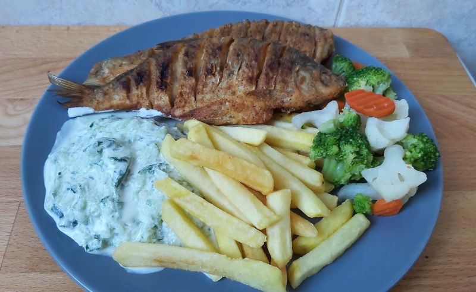

Élvezd a Nagyi Keszegsűtőjének ételeit finomságait.
Fedezd fel a hagyományos ízek világát a Nagyi Keszegútján! Friss, házias ételek, szeretettel készítve, hogy minden falatban otthon érezd magad. Mi nem csak ételt adunk, hanem egy kis szeletet a múltból is, ahol a minőség és a családi receptúrák a legfontosabbak."Minden falat egy emlék."

Keszeg&Krumplival
Rendelj házhoz is akár a nagyi keze által készült menűjéből.Ára:4800Ft
KeszegSűtve
Rendelj házhoz is akár a nagyi keze által készült Sült keszegekből.Ára:3500Ft
A nagyi Hal-leve
Rendelj házhoz is akár a nagyi keze által készült Halászléből.Ára:3870Ft
Vélemények
Kovács Péter ⭐⭐⭐⭐⭐
Régóta keresek egy helyet, ahol igazán ropogós, ízletes sült keszeget ehetek – és itt végre megtaláltam! A hal friss, a fűszerezés tökéletes, és a kiszolgálás is nagyon kedves. Hely nagyon szép helyen helyezkedik el nagyon vissza hozza a régi világ érzését,nyáron nagyon jo környezetben lehet elfogyasztani az ételt hiszen nagyon sok árnyék található a helyen! Biztosan visszatérek!
Tóth András ⭐⭐⭐⭐⭐
Minden falatja mennyei! Kívül ropogós, belül szaftos, pont ahogy szeretem. A környezet is barátságos, igazi balatoni hangulatot idéz. Mindenkinek ajánlom!
Nagy Zsuzsanna ⭐⭐⭐⭐⭐
Nem gondoltam volna, hogy ennyire jó sült keszeget fogok enni! Az adag bőséges, az ár-érték arány kiváló. A házi savanyúság külön plusz pont! Minden halimádónak kötelező kipróbálni!
Legfelkapottabb ételeink
Ha szereted a friss, ropogósra sült halakat és a házias ízeket, akkor nálunk jó helyen jársz! Vendégeink kedvencei között olyan ételeket találsz, amelyek a balatoni nyarak ízvilágát idézik – friss alapanyagokból, gondosan elkészítve. Íme néhány fogás, amit mindenképp érdemes megkóstolnod
A nagyiféle Halászlé
Igazi hagyományos halászlé, gazdag, sűrű lével és bőséges halfilé adaggal. A fűszerpaprika és a friss hal tökéletes harmóniát alkot, hogy minden kanálban a legjobb ízeket élvezhesd!
3870ft
Keszeg Sűtve
Frissen fogott, aranybarnára sütött ropogós hal, amely kívül ropog, belül pedig szaftos és ízletes. Egy kis citrommal és házi köretekkel tálalva igazi balatoni klasszikus!
3500Ft
Keszeg Sűtve hasábburgonyával
Kívül ropogós, belül omlós sült keszeg, amelyet frissen vágott, aranybarnára sütött hasábburgonya kísér. Egy falat balatoni hangulat, amelyet házi mártogatóssal és friss citrommal tehetsz még tökéletesebbé!
4800ft
Sült Hekk
Kívül ropogós panír, belül omlós és szaftos halfilé, amely minden halimádó kedvence. Egy kis citrommal és friss körettel tálalva tökéletes választás egy könnyű, mégis ízletes ebédhez!
950ft/dkg
Vásárlói Visszajelzések
Néhány hete vásároltam egy keszegsütőt, és bár elsőre kicsit szkeptikus voltam, most már teljesen elégedett vagyok a döntésemmel! Az eszközt egy barátom ajánlotta, aki már régóta használja, és azt mondta, hogy ha szeretem a halat, akkor mindenképp próbáljam ki. Azonnal meg is rendeltem egyet, és nem csalódtam!
A keszegsütő kialakítása rendkívül praktikus. Az első, ami feltűnt, hogy nagyon könnyű használni, és nem kell hozzá semmilyen különleges előkészület. Az eszköz tálcája elég nagy ahhoz, hogy több keszeg egyszerre is helyet kapjon, és a halak szépen egyenletesen átsülnek. Az elektromos beállítások is egyszerűek, és már egy-két használat után teljesen belejöttem. A hőfokot a legjobban a 180 fokosra állítottam, így a halak kívül ropogósak, belül pedig szaftosak maradnak.
A legjobb része talán az, hogy nem kell többé olajat használni, így a keszeg sokkal egészségesebben készíthető el. Az aljára pedig egy egyszerű, könnyen tisztítható tálca van, ami összegyűjti a felesleges nedvességet, így nem lesz túl zsíros, és az étkezés után is könnyen takarítható.
A sütő nem foglal sok helyet, így nyáron is könnyen ki lehet vinni a kertbe, és a családnak a szabadban készíteni friss halat. Az eddigi tapasztalataim alapján gyorsan és hatékonyan készíthetem el a halakat, miközben megőrzik a friss ízüket.
Bár egy kicsit drágább, mint a hagyományos hal sütők, az ár-érték arány szerintem teljesen megéri. Ráadásul nem csak keszeg, hanem más kisebb halak is remekül sülnek benne.
Összességében, ha szereted a friss halat, és szeretnél egy gyors, egyszerű megoldást a sütésére, akkor mindenképp ajánlom a keszegsütőt. Egy valódi kedvenc lett a konyhámban!